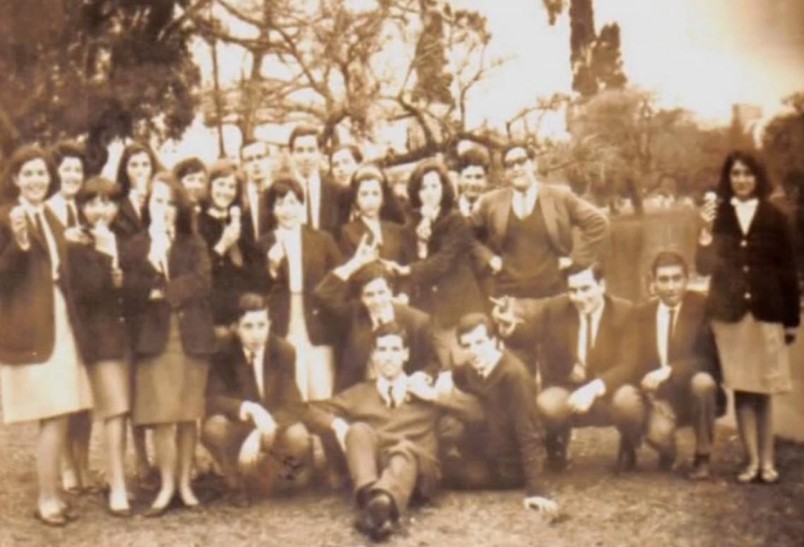

VIDEOS CORAL 25
Reseña histórica

Coral 25 - Reseña Histórica hasta el año 2014.
2014 DVD - 25 Años Juntos 1989 - 2014
2014 - RESEÑA HISTÓRICA - CORAL 25 - Dir. Silvia Blanco
2026 - EL CORAL 25 CUMPLE 70 AÑOS! - SILVIA BLANCO - DIRECTORA DEL CORAL 25
En Escena
"Coral 25" Como dos extraños y Tonada de otoño - Dir. S. Blanco | Ensayo.
Locuras de Silvio Rodríguez - Bucaramanga, Colombia 2019 - "Coral 25" Dir. S. Blanco (Ensayo)
Te quiero (Benedetti y Favero) - "Coral 25" Dir. S. Blanco (Ensayo)
MASA CORAL A MI MANERA - Dir. Silvia Blanco